library(tidyverse) # carrega el tidyverse (inclou ggplot2)
competencies <- read_csv2("dades/competencies.csv") |> # importa les dades netes...
mutate(habitat = factor(habitat, # ...i torna a ordenar les categories
levels = c("Fins a 10000", "De 10001 a 100000", "Més de 100000")),
nivell_mat = factor(nivell_mat, levels = c("Baix", "Mitjà", "Alt")))Tutorial: gràfics bivariats amb ggplot2
Sessió 3 · Per a qui ja ha acabat la pràctica
NotaPer a qui és aquest tutorial?
Per a qui ja ha acabat la pràctica de la sessió 3 i vol veure en un gràfic les relacions entre dues variables que hem calculat amb count() i group_by().
Com s’ha de fer: obriu un script nou a RStudio (File → New File → R Script), copieu-hi el codi de cada pas (amb el botó 📋 de la dreta de cada bloc), executeu-lo amb Ctrl + Enter i mireu què surt al panell Plots. Al final de cada apartat hi ha un «Prova-ho» per practicar, amb la solució amagada.
No heu fet mai cap gràfic amb ggplot2? Comenceu pel tutorial de primers gràfics de la sessió 2: explica la idea de les capes, aes() i el +.
0. Preparació
Amb el projecte de la sessió 3 (sessio_3.Rproj) obert, carregueu el tidyverse i importeu les dades, igual que al pas 1 de la pràctica:
Recordeu la regla bàsica: un gràfic de ggplot2 es construeix per capes unides amb + (no amb |>).
1. Dues categòriques: barres per grups
A la pràctica hem comptat quants alumnes hi ha de cada nivell de matemàtiques per a cada gènere amb count(genere, nivell_mat). Al gràfic, el gènere va a l’eix X i el nivell, al color de les barres (fill, dins d’aes()):
ggplot(competencies, aes(x = genere, # eix X: la VI (gènere)
fill = nivell_mat)) + # color: la VD (nivell de matemàtiques)
geom_bar(position = "dodge") + # barres una al costat de l'altra
labs(x = NULL, # sense títol a l'eix X
y = "Nombre d'alumnes", # títol de l'eix Y
fill = "Nivell de matemàtiques") + # títol de la llegenda
theme_minimal() # estil net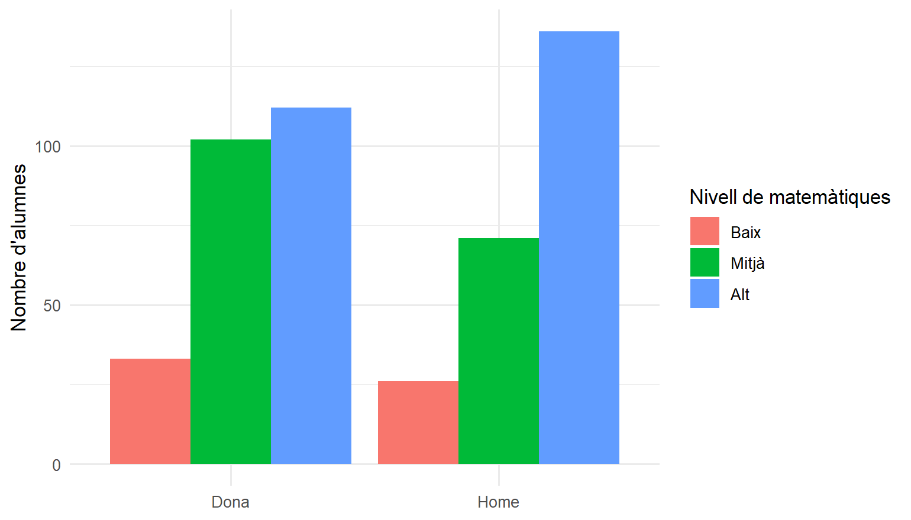
Si traiem position = "dodge", les barres de cada gènere es posen una a sobre de l’altra: són les barres apilades. Cada columna té l’alçada del total d’alumnes del gènere, dividida per nivells:
ggplot(competencies, aes(x = genere, fill = nivell_mat)) + # el mateix que abans...
geom_bar() + # ...sense position: barres apilades
labs(x = NULL,
y = "Nombre d'alumnes",
fill = "Nivell de matemàtiques") +
theme_minimal()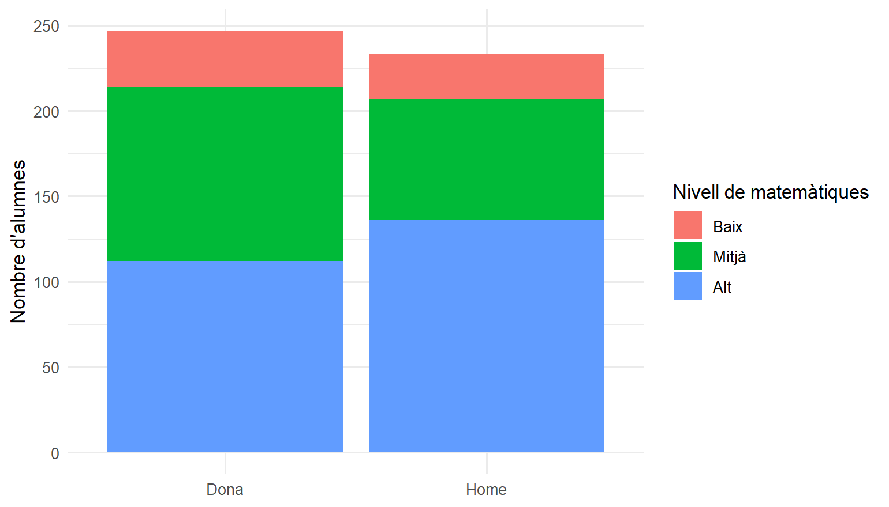
Ara bé, hi ha més noies que nois, i per comparar ens interessen els percentatges dins de cada gènere (com fèiem amb group_by()). N’hi ha prou d’afegir position = "fill": cada barra apilada arriba al 100 % i es veu la proporció de cada nivell.
ggplot(competencies, aes(x = genere, fill = nivell_mat)) + # el mateix que abans...
geom_bar(position = "fill") + # ...però cada barra suma el 100 %
scale_y_continuous(labels = scales::percent) + # eix Y en percentatge
labs(x = NULL,
y = "Percentatge d'alumnes",
fill = "Nivell de matemàtiques") +
theme_minimal()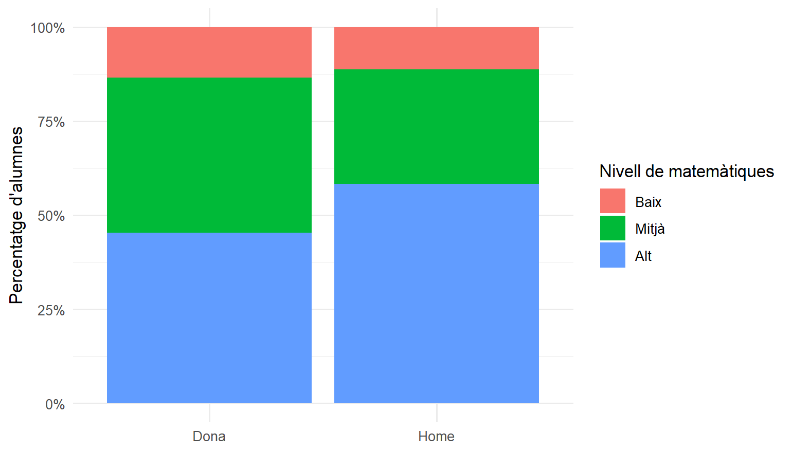
Ara es veu clar: la franja de nivell alt és més gran entre els nois.
Consell
scales::percent vol dir «la funció percent() del paquet scales». No cal carregar-lo: s’instal·la amb el tidyverse.
Nota✍️ Prova-ho: nivell de matemàtiques per titularitat (cliqueu per veure la solució)
Feu el gràfic de barres al 100 % del nivell de matemàtiques per a cada titularitat. S’assembla al que vau trobar al pas 3 de la pràctica?
ggplot(competencies, aes(x = titularitat, fill = nivell_mat)) + # VI a l'eix X, VD al color
geom_bar(position = "fill") + # barres al 100 %
scale_y_continuous(labels = scales::percent) + # eix Y en percentatge
labs(x = NULL, y = "Percentatge d'alumnes",
fill = "Nivell de matemàtiques") +
theme_minimal()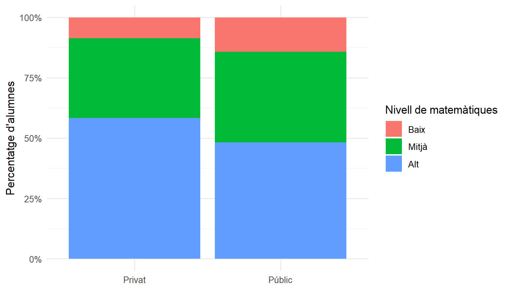
2. Els colors
Els colors per defecte no sempre són els millors. Per a una variable ordenada (Baix < Mitjà < Alt) va bé una escala d’un sol color, de clar a fosc. Amb scale_fill_manual() els triem a mà:
ggplot(competencies, aes(x = genere, fill = nivell_mat)) +
geom_bar(position = "fill") +
scale_y_continuous(labels = scales::percent) +
scale_fill_manual(values = c("Baix" = "#EBD3D7", # un color per a cada categoria,
"Mitjà" = "#B5606E", # de clar a fosc
"Alt" = "#6D071A")) +
labs(x = NULL, y = "Percentatge d'alumnes",
fill = "Nivell de matemàtiques") +
theme_minimal()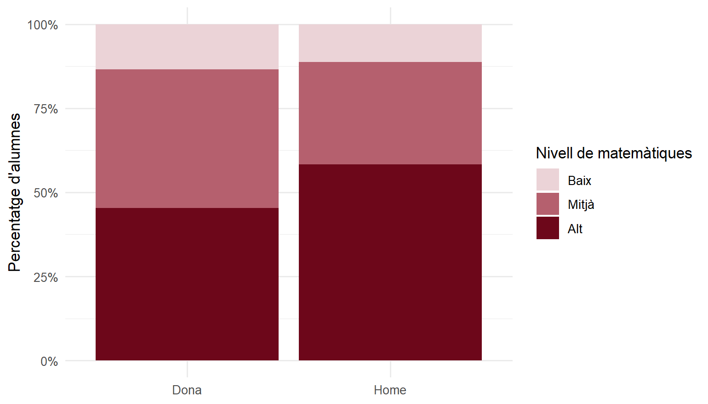
3. Numèrica i categòrica: boxplot per grups
Per comparar una variable numèrica entre grups, el boxplot (ja el vam veure a la sessió 2): la categòrica a l’eix X i la numèrica a l’eix Y. Hi afegim un punt amb la mitjana de cada grup amb stat_summary():
ggplot(competencies, aes(x = titularitat, # eix X: els grups
y = nota_mat)) + # eix Y: la nota
geom_boxplot(fill = "#D8A9B1", width = 0.5) + # una caixa per grup
stat_summary(fun = mean, # calcula la mitjana de cada grup...
geom = "point", # ...i la dibuixa com un punt
color = "#6D071A", size = 3) +
labs(x = NULL, y = "Puntuació de matemàtiques") +
theme_minimal()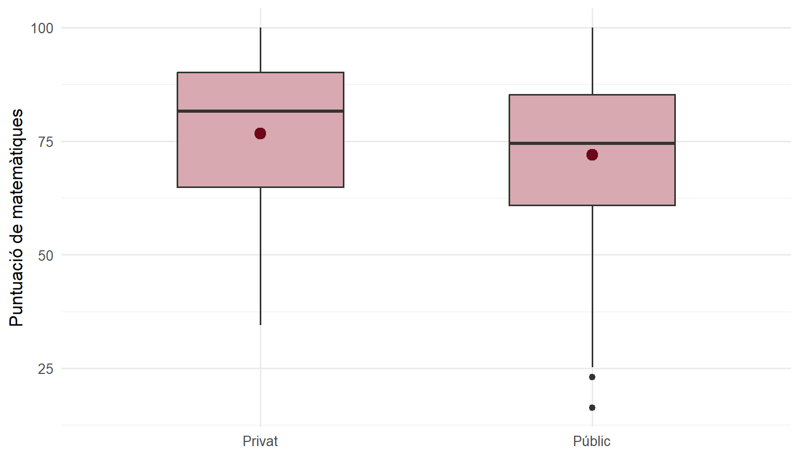
La línia de dins de la caixa és la mediana, i el punt, la mitjana. Als centres privats, totes dues són més altes.
Nota✍️ Prova-ho: nota de català per hàbitat (cliqueu per veure la solució)
Feu un boxplot de nota_cat per a cada categoria de habitat, amb el punt de la mitjana. (Veureu un avís pels alumnes sense nota de català: no és cap error.)
ggplot(competencies, aes(x = habitat, y = nota_cat)) + # grups a l'eix X, nota a l'eix Y
geom_boxplot(fill = "steelblue", alpha = 0.4, width = 0.5) + # alpha: transparència (0 a 1)
stat_summary(fun = mean, geom = "point", size = 3) + # punt amb la mitjana
labs(x = "Mida del municipi", y = "Puntuació de català") +
theme_minimal()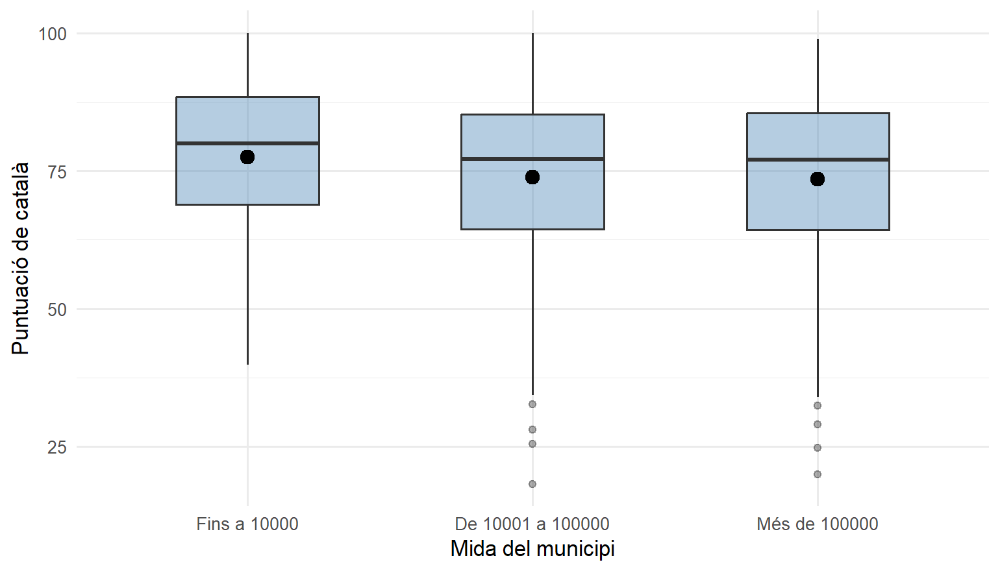
4. Comparar mitjanes: punts i barres d’error
El boxplot ensenya tota la distribució. Però sovint només volem comparar les mitjanes, i saber si la diferència és prou gran. Una manera molt habitual de fer-ho és un punt amb la mitjana de cada grup i una barra d’error amb el seu interval de confiança del 95 % (el que vam calcular a la sessió 2).
Primer calculem, per a cada grup, la mitjana, l’error estàndard i els límits de l’interval, amb group_by() + summarise():
mitjanes_tit <- competencies |>
group_by(titularitat) |>
summarise(n = n(),
mitjana = mean(nota_mat),
se = sd(nota_mat) / sqrt(n), # error estàndard
inf = mitjana - 1.96 * se, # límit inferior de l'IC del 95 %
sup = mitjana + 1.96 * se) # límit superior de l'IC del 95 %
mitjanes_tit# A tibble: 2 × 6
titularitat n mitjana se inf sup
<chr> <int> <dbl> <dbl> <dbl> <dbl>
1 Privat 163 76.7 1.28 74.2 79.2
2 Públic 317 72.0 1.01 70.0 73.9I després ho dibuixem: el punt amb geom_point() i la barra d’error amb geom_errorbar(), que necessita saber on comença (ymin) i on acaba (ymax):
ggplot(mitjanes_tit, aes(x = titularitat, y = mitjana)) + # un punt per grup: la mitjana
geom_errorbar(aes(ymin = inf, ymax = sup), # barra d'error: de inf a sup
width = 0.15, # amplada dels "bigotis"
color = "#6D071A") +
geom_point(size = 4, color = "#6D071A") + # el punt de la mitjana
labs(x = NULL,
y = "Nota mitjana de matemàtiques",
caption = "Barres d'error: interval de confiança del 95 %") +
theme_minimal()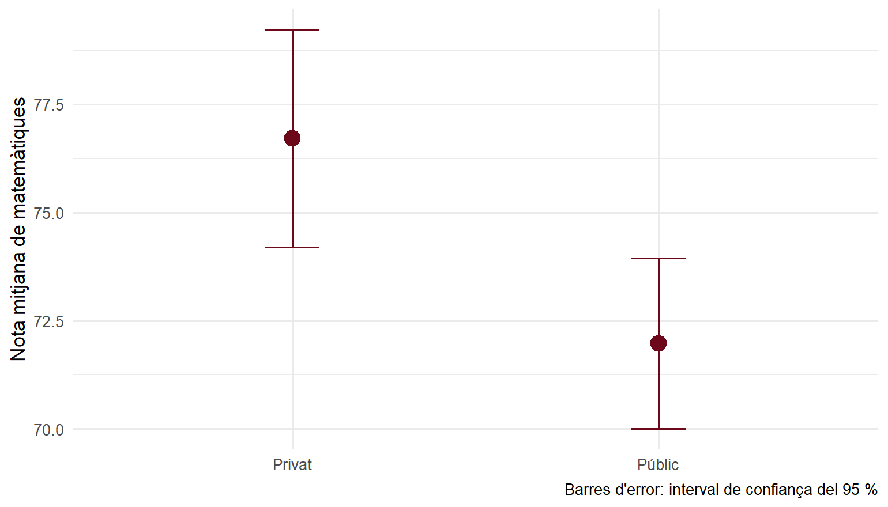
Com es llegeix? Les barres dels dos grups no se superposen: és un indici que la diferència és significativa (com va confirmar el t-test de la pràctica, amb p = 0,004).
AlertaCompte amb l’eix Y
Fixeu-vos que l’eix Y no comença a 0: això fa que la diferència sembli més gran del que és (són menys de 5 punts sobre 100). En gràfics de punts és acceptable, però sempre cal mirar l’escala. Si voleu que comenci a 0, afegiu + expand_limits(y = 0).
Nota✍️ Prova-ho: nota mitjana de català per hàbitat (cliqueu per veure la solució)
Feu el mateix gràfic (punts i barres d’error) amb la nota de català per a cada categoria de habitat. Compte: nota_cat té valors perduts, i n() compta totes les files. Primer traieu els NA amb filter(!is.na(nota_cat)).
competencies |>
filter(!is.na(nota_cat)) |> # traiem els alumnes sense nota de català
group_by(habitat) |>
summarise(n = n(),
mitjana = mean(nota_cat),
se = sd(nota_cat) / sqrt(n),
inf = mitjana - 1.96 * se,
sup = mitjana + 1.96 * se) |>
ggplot(aes(x = habitat, y = mitjana)) + # a partir d'aquí, amb +
geom_errorbar(aes(ymin = inf, ymax = sup), width = 0.15, color = "steelblue") +
geom_point(size = 4, color = "steelblue") +
labs(x = "Mida del municipi", y = "Nota mitjana de català") +
theme_minimal()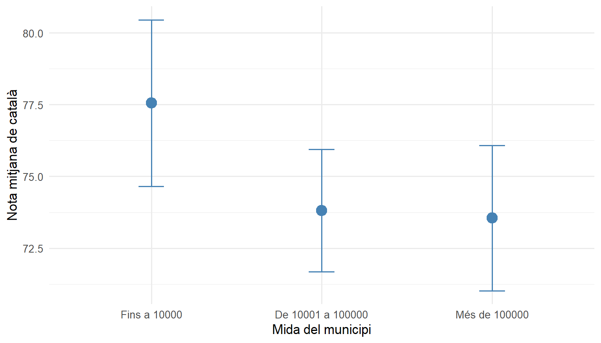
Ara les barres sí que se superposen: és coherent amb l’ANOVA, que no trobava diferències significatives entre hàbitats (p = 0,09). (La regla de la superposició és orientativa: per estar-ne segurs, cal el contrast.)
5. Del summarise() al gràfic: geom_col()
geom_bar() compta les files ell mateix. Però sovint ja tenim els números calculats amb group_by() + summarise(), i només els volem dibuixar. Llavors fem servir geom_col(), que fa una barra amb l’alçada que li diem a y:
mitjanes <- competencies |> # 1. calculem les mitjanes per grup...
group_by(titularitat, genere) |>
summarise(mitjana = mean(nota_mat))
mitjanes # (és el pas 7 de la pràctica)# A tibble: 4 × 3
# Groups: titularitat [2]
titularitat genere mitjana
<chr> <chr> <dbl>
1 Privat Dona 75.2
2 Privat Home 78.2
3 Públic Dona 69.8
4 Públic Home 74.4ggplot(mitjanes, aes(x = titularitat, # 2. ...i les dibuixem
y = mitjana, # alçada de la barra: la mitjana
fill = genere)) + # color: el gènere
geom_col(position = "dodge") + # barres una al costat de l'altra
labs(x = NULL, y = "Nota mitjana de matemàtiques", fill = NULL) +
theme_minimal()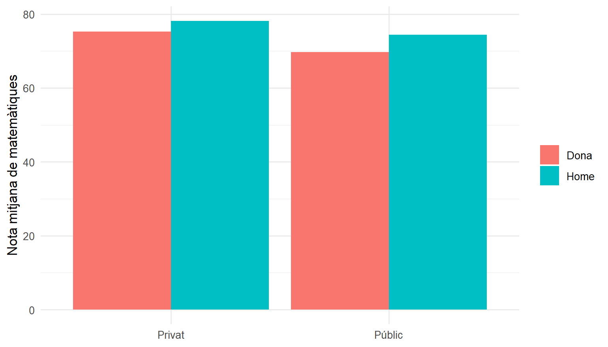
Important
geom_bar() o geom_col()?
geom_bar(): li donem les dades originals (una fila per alumne) i compta quantes n’hi ha.geom_col(): li donem una taula ja resumida (ambcount()osummarise()) i dibuixa els números tal com són.
Nota✍️ Prova-ho: nota mitjana de matemàtiques per hàbitat (cliqueu per veure la solució)
Calculeu la nota mitjana de matemàtiques per a cada categoria de habitat i feu-ne un gràfic de barres amb geom_col().
competencies |> # es pot enllaçar tot amb el pipe...
group_by(habitat) |>
summarise(mitjana = mean(nota_mat)) |>
ggplot(aes(x = habitat, y = mitjana)) + # ...i a partir d'aquí, amb +
geom_col(fill = "steelblue", width = 0.6) +
labs(x = "Mida del municipi", y = "Nota mitjana de matemàtiques") +
theme_minimal()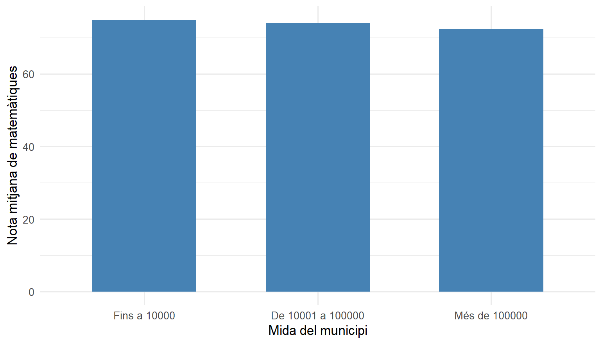
Fixeu-vos que, en aquest cas, el resultat del summarise() passa directament a ggplot() amb el pipe |>, i a partir d’aquí les capes s’uneixen amb +.
6. Un gràfic per grup: facet_wrap()
Una altra manera de comparar grups és fer un gràfic petit per a cada grup, l’un al costat de l’altre. Ho fa facet_wrap(), amb la variable de grup després d’una ~:
ggplot(competencies, aes(x = nota_mat)) + # histograma de la nota...
geom_histogram(binwidth = 5, fill = "#D8A9B1", color = "white") +
facet_wrap(~ genere) + # ...un per a cada gènere
labs(x = "Puntuació de matemàtiques", y = "Nombre d'alumnes") +
theme_minimal()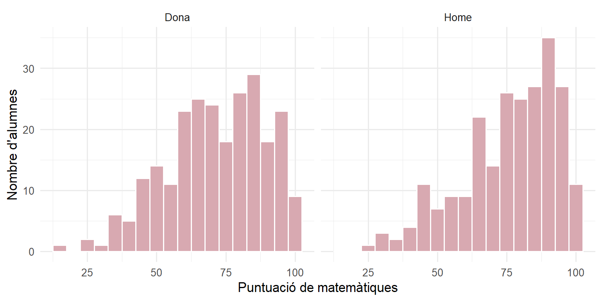
Nota✍️ Prova-ho: histograma de la nota d’anglès per titularitat (cliqueu per veure la solució)
Feu un histograma de nota_ang amb un gràfic per a cada titularitat.
ggplot(competencies, aes(x = nota_ang)) +
geom_histogram(binwidth = 5, fill = "steelblue", color = "white") +
facet_wrap(~ titularitat) + # un gràfic per titularitat
labs(x = "Puntuació d'anglès", y = "Nombre d'alumnes") +
theme_minimal()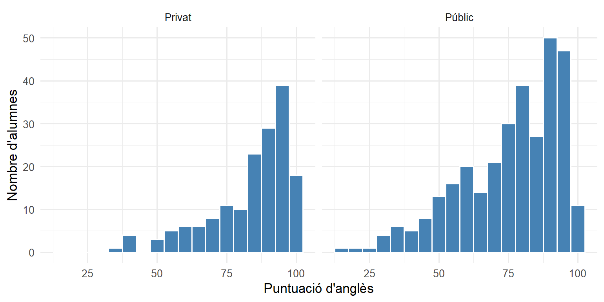
Xuleta
| Vull… | Codi |
|---|---|
| Barres d’una categòrica per grups (una al costat de l’altra) | ggplot(dades, aes(x = vi, fill = vd)) + geom_bar(position = "dodge") |
| Barres apilades | ggplot(dades, aes(x = vi, fill = vd)) + geom_bar() |
| Barres al 100 % (percentatges dins de cada grup) | geom_bar(position = "fill") |
| Eix Y en percentatge | + scale_y_continuous(labels = scales::percent) |
| Colors a mà | + scale_fill_manual(values = c("A" = "red", "B" = "blue")) |
| Boxplot per grups | ggplot(dades, aes(x = grup, y = x)) + geom_boxplot() |
| Punt amb la mitjana | + stat_summary(fun = mean, geom = "point") |
Mitjanes amb barres d’error (calculades abans amb summarise()) |
ggplot(resum, aes(x = grup, y = mitjana)) + geom_errorbar(aes(ymin = inf, ymax = sup)) + geom_point() |
| Barres amb números ja calculats | ggplot(resum, aes(x = grup, y = mitjana)) + geom_col() |
| Un gràfic per grup | + facet_wrap(~ grup) |
Per anar més lluny
- Tutorial de primers gràfics amb
ggplot2de la sessió 2: barres, histogrames, boxplots i com desar els gràfics. - R for Data Science, capítol «Data visualization» (en anglès): la introducció de referència a
ggplot2. - Xuleta oficial de
ggplot2(PDF, en anglès): totes les geometries i opcions en dues pàgines.